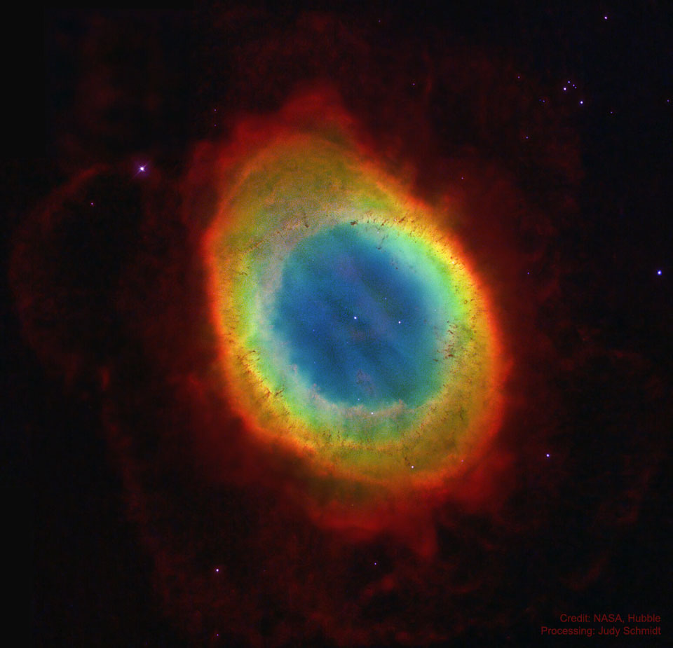

Une nébuleuse (du latin nebulosus, « flou », de nebula, « nuage ») est, en astronomie, un objet céleste composé de gaz raréfié, de plasma ou de poussières interstellaires. Avant les années 1920, le terme désignait tout objet du ciel d’aspect diffus. Étudiées par des astrophysiciens spécialisés dans l'étude du milieu interstellaire, les nébuleuses jouent un rôle clé dans la naissance des étoiles
.Les nébuleuses peuvent former des systèmes d'étoiles en s'effondrant sous l'effet de la gravitation. Ainsi, le Système solaire se serait formé à partir d’une nébuleuse solaire. Ce scénario a été évoqué pour la première fois au cours de la seconde moitié du xviiie siècle par Emmanuel Kant et Pierre-Simon de Laplace.
Une étoile est un corps céleste plasmatique qui rayonne sa propre lumière par réactions de fusion nucléaire, ou des corps qui ont été dans cet état à un stade de leur cycle de vie, comme les naines blanches ou les étoiles à neutrons. Cela signifie qu'ils doivent posséder une masse minimale pour que les conditions de température et de pression au sein de la région centrale — le cœur — permettent l'amorce et le maintien de ces réactions nucléaires, seuil en de çà duquel on parle d'objets substellaires. Les masses possibles des étoiles s'étendent de 0,085 masse solaire à une centaine de masses solaires. La masse détermine la température et la luminosité de l'étoile.